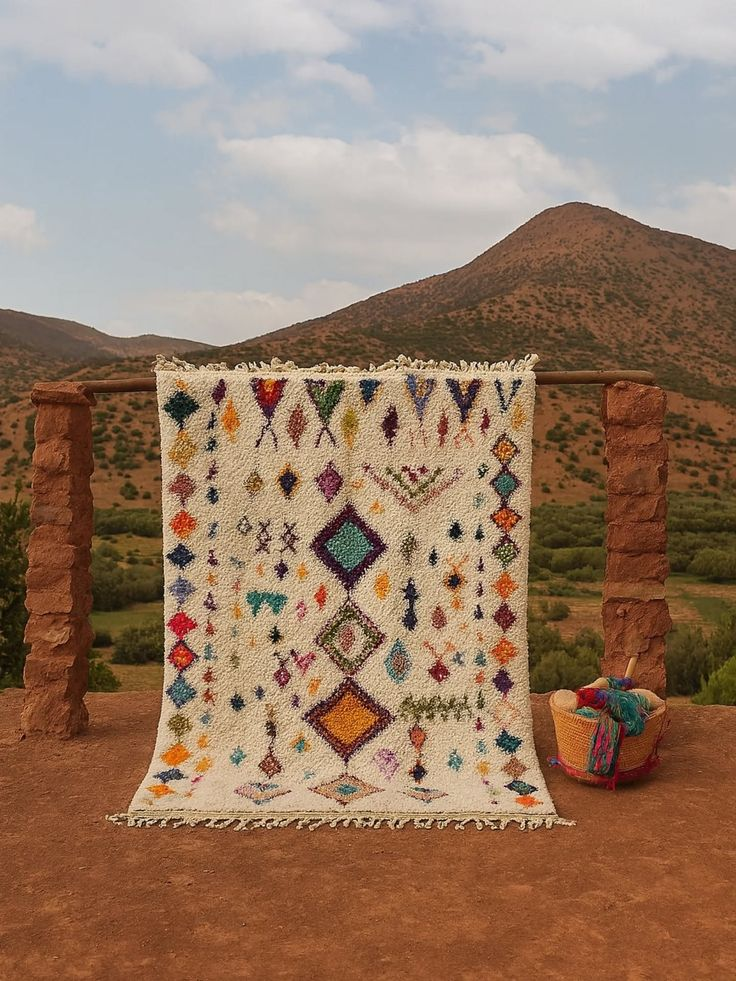
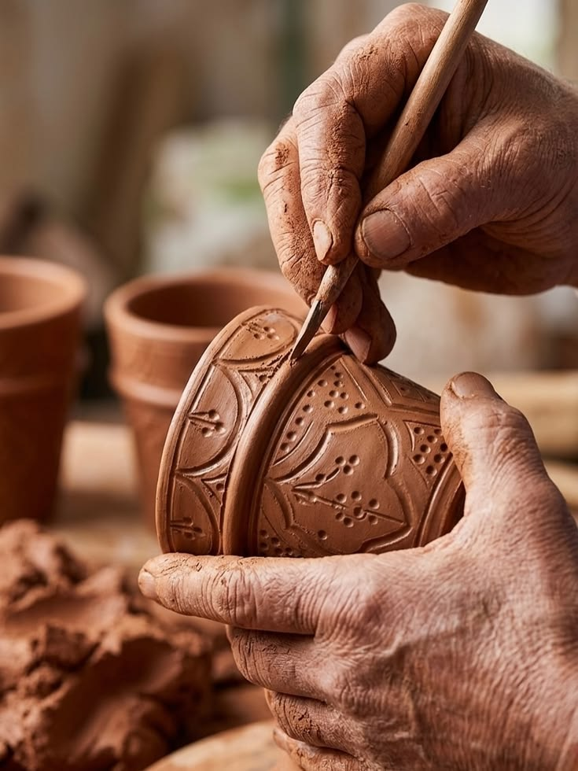
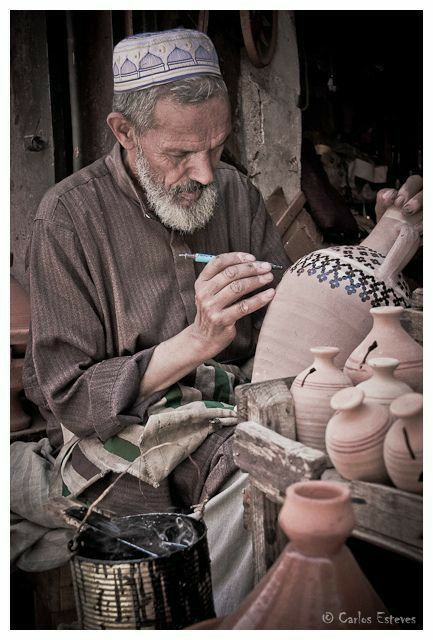
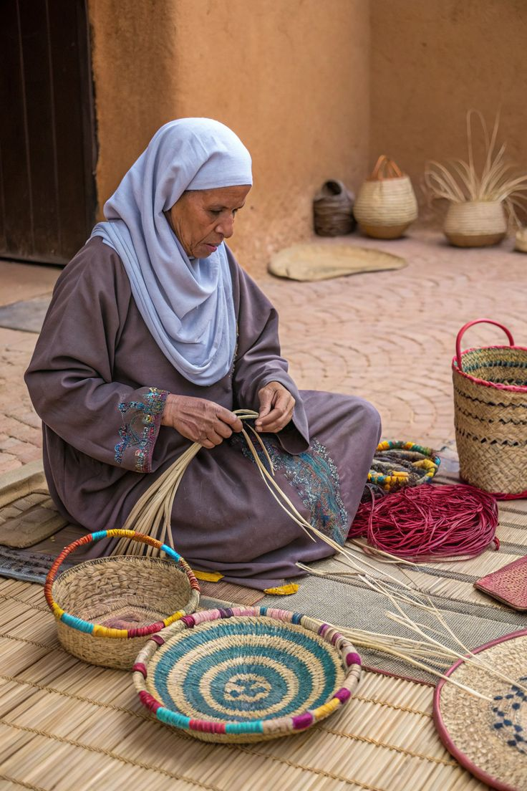
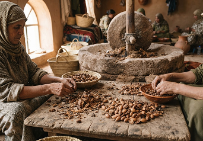
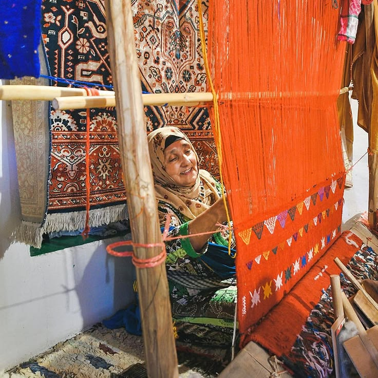
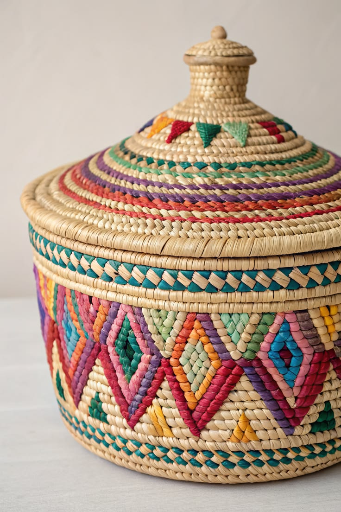
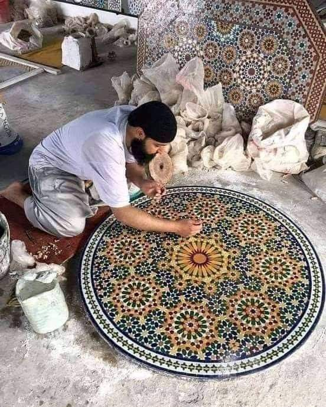
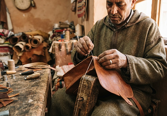
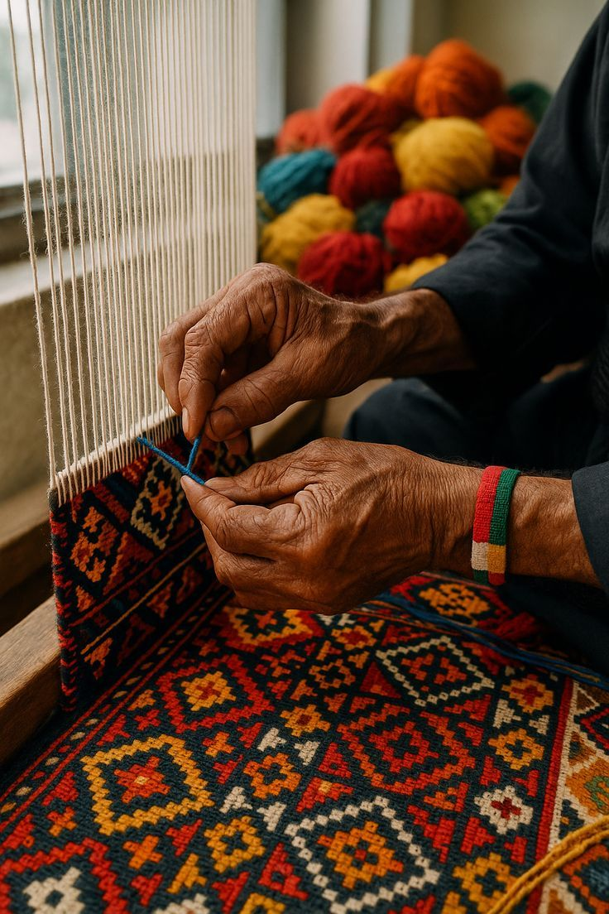

Tissage
Tazrout
Aït Ourir · Marrakech-Safi
Des tapis de laine tissés à la main, porteurs des récits du Haut Atlas.
Rencontrer la coopérative ↗
Revenir au sommaire ↑
Neuf coopératives, six savoir-faire et autant de façons de créer ensemble. Découvrez leur histoire et prenez contact directement avec leurs ateliers.
Sélection de démonstration · fiches et coordonnées à valider.

Sommaire par ancres pour la future intégration ; navigation non interactive dans la maquette.
Marrakech-Safi
3 collectifs
Revenir au sommaire ↑

Tissage
Aït Ourir · Marrakech-Safi
Des tapis de laine tissés à la main, porteurs des récits du Haut Atlas.
Rencontrer la coopérative ↗

Poterie
Safi · Marrakech-Safi
Une terre locale façonnée en pièces utiles, sobres et vivantes.
Rencontrer la coopérative ↗

Vannerie
Marrakech · Marrakech-Safi
La fibre de palmier devient paniers et objets du quotidien..
Rencontrer la coopérative ↗
3 collectifs
Revenir au sommaire ↑

Argan
Aït Ourir · Marrakech-Safi
Une huile d’argan issue d’un savoir-faire collectif transmis entre femmes.
Rencontrer la coopérative ↗

Tissage
Agadir - Souss-Massa
Des étoffes de coton et de laine aux nuances de la cote atlantique.
Rencontrer la coopérative ↗↑

Vannerie
Taroudant - Souss-Massa
Des étoffes de coton et de laine aux nuances de la cote atlantique.
Rencontrer la coopérative ↗
3 collectifs
Rencontrer la coopérative ↗

Zellige
fès - Fès-Meknès
La géométrie prend forme, tesselle après tesselle, dans l’atelier.
Rencontrer la coopérative ↗

Cuir
Meknès - Fès-Meknès
Des accessoires de cuir découpés et cousus à la main, faits pour durer.
Rencontrer la coopérative ↗

Tissage
Agadir - Souss-Massa
Des couvertures de laine qui relient matière locale et création actuelle.
Rencontrer la coopérative ↗
Votre atelier a aussi une histoire.
Rejoindre le réseau Taawon ↗